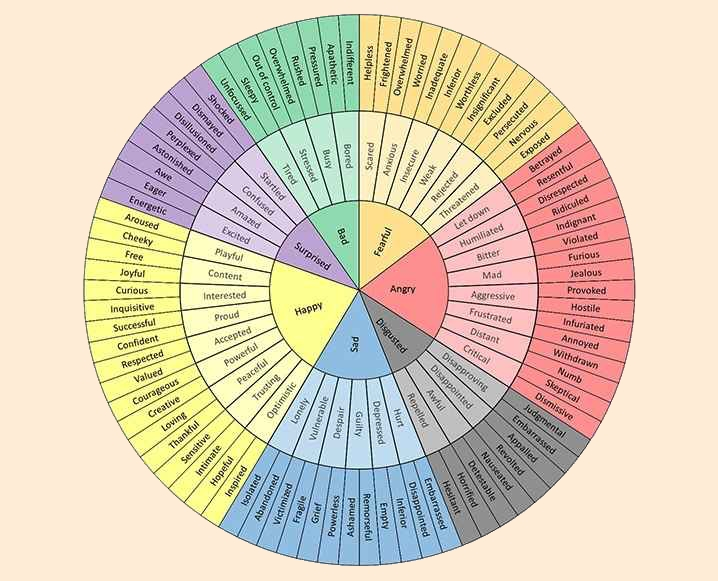

15For we do not have a high priest who is unable to sympathize with our weaknesses, but one who in every respect has been tempted as we are, yet without sin. 16Let us then with confidence draw near to the throne of grace, that we may receive mercy and find grace to help in time of need. Hebrews 4:15-16
Therefore the anger of the Lord was kindled against his people, and he stretched out his hand against them and struck them, and the mountains quaked; and their corpses were as refuse in the midst of the streets. For all this his anger has not turned away, and his hand is stretched out still. Isaiah 5:25
33When Jesus saw her weeping, and the Jews who had come with her also weeping, he was deeply moved in his spirit and greatly troubled. 34And he said, “Where have you laid him?” They said to him, “Lord, come and see.” 35Jesus wept. John 11:33-35
...for the joy that was set before him endured the cross... Hebrews 12:2
Then he said to them, “My soul is very sorrowful, even to death; remain here, and watch with me.” Matthew 26:38
Emotions are given by God to help us navigate our lives and relationships. They connect us to God and to one another. There are often two camps that people sit in: The heart is deceitful (Jeremiah 17:9) therefore all emotions are bad OR your feelings are king (do what feels “good”): listen to them and let them control your life. Both of these are an improper view of emotions through a Gospel lens. Instead of living at the mercy of our emotions or denying them altogether, we can use emotions as a tool to connect us to God and to other people.
Paying attention to what we’re sensing in our feelings, acknowledging that those feelings are true for us, and remembering when the emotions we’re experiencing first showed themselves in our lives.
Now we want to deepen our articulations by categorizing our level of Okayness or Not Okayness with better, richer words.
We waste so much energy scrutinizing our feelings rather than just feeling what we need to feel. Pause, give yourself permission, look back, and persist.
Feelings don’t heal when we ignore them; they heal when we are wrapped up by the people we love in the middle of them.
Even if you think you aren’t doing anything with your feelings, you are.